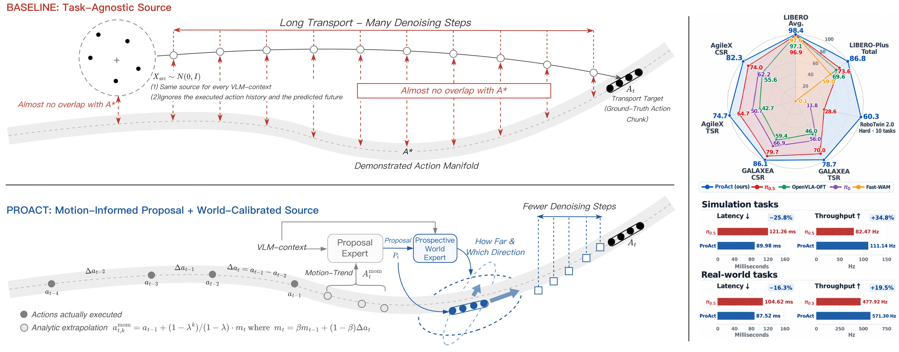
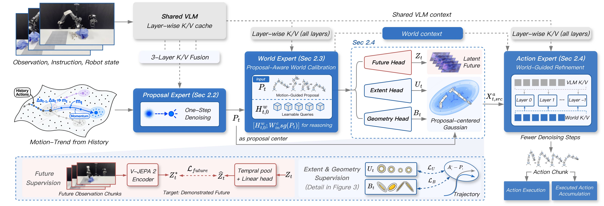
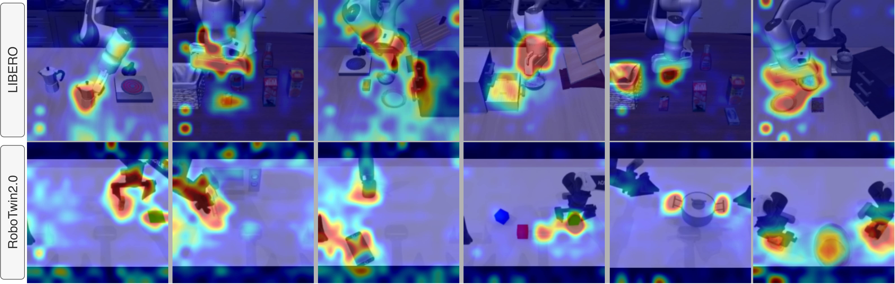
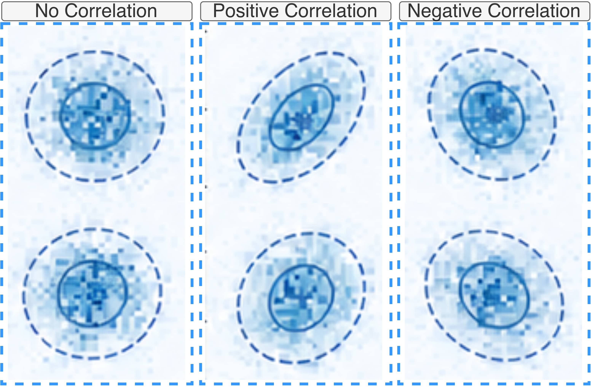
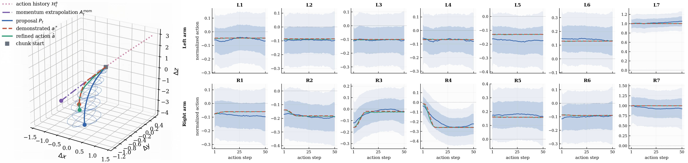
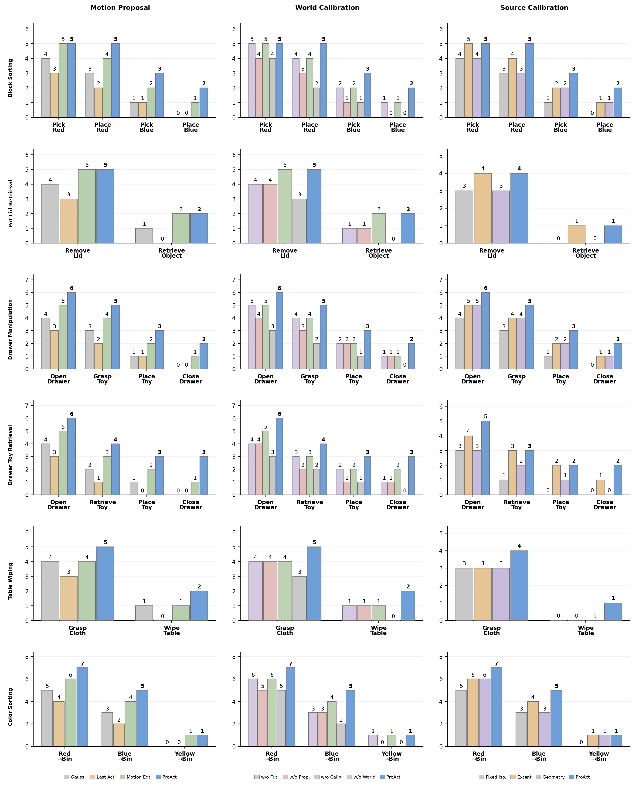

Proposal Expert
Maintains an exponentially smoothed motion estimate, extrapolates it over the action horizon, and grounds the proposal in VLM features with a shallow endpoint flow step.
ProAct turns recent robot motion into a scene-aware proposal, calibrates it with prospective world reasoning, and refines it into executable actions.
1Harbin Institute of Technology, Shenzhen
· 2ZTE Corporation
· 3Sun Yat-sen University
*Equal contribution · †Corresponding author
Flow-based VLA policies typically start every action chunk from an uninformed isotropic Gaussian. ProAct changes the starting point itself: recent executed motion becomes a soft local hypothesis, while a proposal-aware World Expert decides how that hypothesis should be centered, scaled, and shaped for the current scene.
Robot manipulation is locally continuous even when task-level behavior is multimodal. The most recent executed actions therefore contain useful information about the direction and scale of the next motion. However, simply extrapolating this motion is unreliable near contact, reorientation, gripper actuation, and task-phase transitions.
ProAct treats motion continuity as a proposal rather than a commitment. It evaluates the proposal against a task-consistent future, then uses that compatibility to shape the source from which the final action trajectory is generated.

The three experts preserve the flexibility of flow matching while making its source distribution predictive and world-aware.
Given the current visual-language context and a history of executed actions, ProAct factorizes action generation into three connected stages. Each stage has a distinct role: estimate a plausible motion, understand whether it is compatible with the scene, and finally produce the executable action chunk.
The calibrated source is proposal-centered and anisotropic. Its refinement extent controls how far the policy can depart from recent motion, while its low-rank geometry allocates correction along coupled translation, rotation, and gripper directions.

Maintains an exponentially smoothed motion estimate, extrapolates it over the action horizon, and grounds the proposal in VLM features with a shallow endpoint flow step.
Uses the proposal as a soft motion prior while predicting the task-consistent future latent with a frozen V-JEPA 2 target and estimating proposal-specific calibration parameters.
Samples from the calibrated anisotropic source and performs the final flow-matching transport, retaining the base VLA's ability to correct an imperfect proposal.
ProAct is evaluated across simulation and real-world manipulation tasks. The proposal-centered source improves both task performance and inference efficiency compared with the isotropic baseline.
On simulated benchmarks, ProAct reaches 98.4% average success on LIBERO, 86.8% on LIBERO-Plus, and 60.3% on the randomized hard subset of RoboTwin 2.0. On physical robots, it achieves strong task and cumulative success rates across GALAXEA R1 Lite and AgileX Cobot Magic. The efficiency gains come from starting flow refinement closer to the relevant action manifold, allowing the model to use half as many denoising steps as π0.5.
Average performance against representative vision-language-action baselines.
| Method | Spatial | Object | Goal | Long | LIBERO Avg. ↑ | Camera | Robot | Language | Light | Background | Noise | Layout | LIBERO-Plus ↑ |
|---|---|---|---|---|---|---|---|---|---|---|---|---|---|
| OpenVLA-OFT | 97.6 | 98.4 | 97.9 | 94.5 | 97.1 | 56.4 | 31.9 | 79.5 | 88.7 | 93.3 | 75.8 | 74.2 | 69.6 |
| π0.5 | 98.8 | 98.2 | 98.0 | 92.4 | 96.9 | 59.7 | 65.5 | 75.3 | 87.0 | 82.4 | 72.1 | 80.3 | 73.6 |
| WorldVLA | 87.6 | 96.2 | 83.4 | 60.0 | 81.8 | 0.1 | 27.9 | 41.6 | 43.7 | 17.1 | 10.9 | 38.0 | 25.0 |
| UniVLA | 95.4 | 98.8 | 93.6 | 94.0 | 95.4 | 1.8 | 46.2 | 69.6 | 69.0 | 81.0 | 21.2 | 31.9 | 42.9 |
| VLA-Adapter | 97.8 | 99.2 | 97.2 | 95.0 | 97.3 | 36.2 | 37.9 | 74.6 | 70.6 | 76.1 | 58.0 | 69.7 | 59.1 |
| DreamVLA | 97.5 | 94.0 | 89.5 | 89.5 | 92.6 | 65.0 | 40.8 | 63.5 | 85.7 | 82.6 | 84.9 | 74.0 | 69.9 |
| VLA-JEPA | 96.2 | 99.6 | 97.2 | 95.8 | 97.2 | 63.3 | 67.1 | 85.4 | 95.6 | 93.6 | 66.3 | 85.1 | 79.5 |
| Fast-WAM | 98.2 | 100.0 | 98.2 | 95.2 | 97.6 | 34.0 | 55.1 | 88.9 | 90.0 | 44.9 | 33.3 | 73.4 | 59.0 |
| HoloBrain | — | — | — | — | — | 66.3 | 49.0 | 65.9 | 94.9 | 93.3 | 73.1 | 78.2 | 72.6 |
| ProAct | 99.4 | 99.6 | 98.4 | 96.0 | 98.4 | 76.1 | 80.3 | 87.4 | 97.8 | 95.5 | 90.2 | 86.2 | 86.8 |
Zero-shot randomized evaluation with 100 rollouts per task.
| Method | Put Bottles | Dual Shoes | Diverse Bottles | Burger Fries | Open Laptop | Blocks RGB | Dual Bottles | Dump Bin | Stamp Seal | Bread Basket | Avg. ↑ |
|---|---|---|---|---|---|---|---|---|---|---|---|
| π0 | 13 | 0 | 6 | 4 | 46 | 5 | 12 | 24 | 4 | 4 | 11.8 |
| π0.5 | 9 | 7 | 3 | 70 | 35 | 35 | 6 | 42 | 23 | 56 | 28.6 |
| Spatial Forcing | 41 | 2 | 38 | 71 | 15 | 7 | 47 | 70 | 2 | 53 | 34.6 |
| X-WAM | 21 | 7 | 26 | 36 | 6 | 36 | 55 | 40 | 16 | 40 | 28.3 |
| X-VLA | 20 | 12 | 30 | 35 | 16 | 4 | 51 | 41 | 2 | 52 | 26.3 |
| Abot-M0 | 26 | 15 | 7 | 55 | 64 | 23 | 19 | 68 | 19 | 47 | 34.3 |
| EventVLA | 31 | 1 | 9 | 7 | 23 | 6 | 8 | 64 | 3 | 15 | 16.7 |
| Xiaomi Robotics-0 | 21 | 9 | 12 | 27 | 24 | 8 | 28 | 49 | 3 | 23 | 20.4 |
| FastWAM | 0 | 0 | 0 | 0 | 0 | 0 | 0 | 1 | 0 | 0 | 0.1 |
| GalaxeaVLA | 3 | 9 | 11 | 32 | 13 | 1 | 21 | 40 | 2 | 32 | 16.4 |
| AHA-WAM | 1 | 0 | 0 | 0 | 9 | 1 | 1 | 27 | 0 | 3 | 4.2 |
| DP3 | 21 | 0 | 1 | 18 | 7 | 0 | 1 | 53 | 0 | 1 | 10.2 |
| starVLA | 0 | 2 | 15 | 11 | 2 | 2 | 20 | 4 | 0 | 5 | 6.1 |
| ProAct | 69 | 39 | 57 | 84 | 76 | 46 | 63 | 78 | 29 | 62 | 60.3 |
Average Task Success Rate (TSR) and Cumulative Success Rate (CSR) over six tasks.
| Method | GALAXEA TSR ↑ | GALAXEA CSR ↑ | AgileX TSR ↑ | AgileX CSR ↑ |
|---|---|---|---|---|
| OpenVLA-OFT | 42.7 | 55.6 | 37.1 | 55.2 |
| π0 | 50.7 | 62.2 | 50.0 | 62.0 |
| π0.5 | 64.7 | 74.0 | 62.3 | 74.9 |
| ProAct | 78.7 | 86.1 | 74.7 | 82.3 |
We examine whether the learned proposals and calibrations are interpretable, and how proposal-centered transport improves action generation across simulated and real-world tasks.
Attention maps on LIBERO (top) and RoboTwin 2.0 (bottom). Warmer colors highlight manipulated objects, interaction regions, and receptacles, showing that the Proposal Expert remains focused on task-relevant scene cues.

Action samples and correlation ellipses visualize the calibrated source geometry. Nearly circular contours indicate weak correlation, while tilted ellipses reveal positive or negative coupling between action dimensions.

In the left panel, the proposal is refined in 3D translation space. In the right panel, normalized trajectories and calibrated support are shown across seven action dimensions: stable dimensions remain close to the proposal, while incompatible ones bend toward the demonstrated future.

Per-checkpoint success is reported across the six GALAXEA R1 Lite tasks. The three panels ablate motion proposal (left), world calibration (middle), and source calibration (right); the full ProAct model obtains the highest bars, especially at later transition and terminal checkpoints.


Representative rollouts show ProAct handling object retrieval, articulated drawers, contact-rich wiping, and repeated color-based placement across different task phases.
These tasks deliberately include situations where local continuation is not enough: the robot must re-ground after opening a drawer, switch from grasping to placement, maintain contact during wiping, or preserve object identity over a sequence of placements. The videos illustrate how proposal, calibration, and refinement work together in closed-loop control.